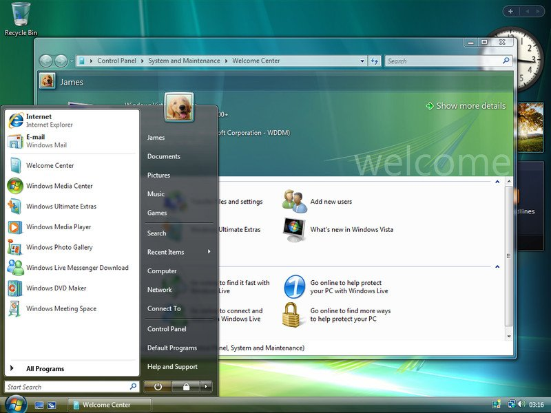

Демонстрация стиля Windows Aero (Windows Vista)
Рецепт
Характерные черты, добавление двух слоев с градиентом, первый слой задает основной цвет, второй cлой с белой обводкой имитирует эффект стекла, третий слой изображение или текст. Общий стиль скевоморфизм
Завершение работы

Демонстрация стиля Windows Fluent Design Systems (Windows 11)

Рецепт
Характерные черты, использование слоя с градиентом следующим от яркого оттенка цвета к темному, при этом сохраняется стиль Флэт.
Хранилище
Свободное пространство, диски, настройки